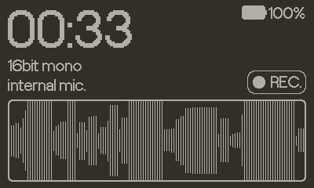
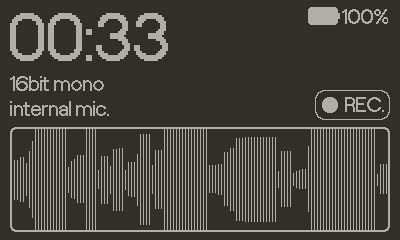
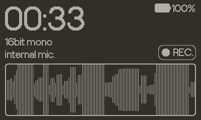
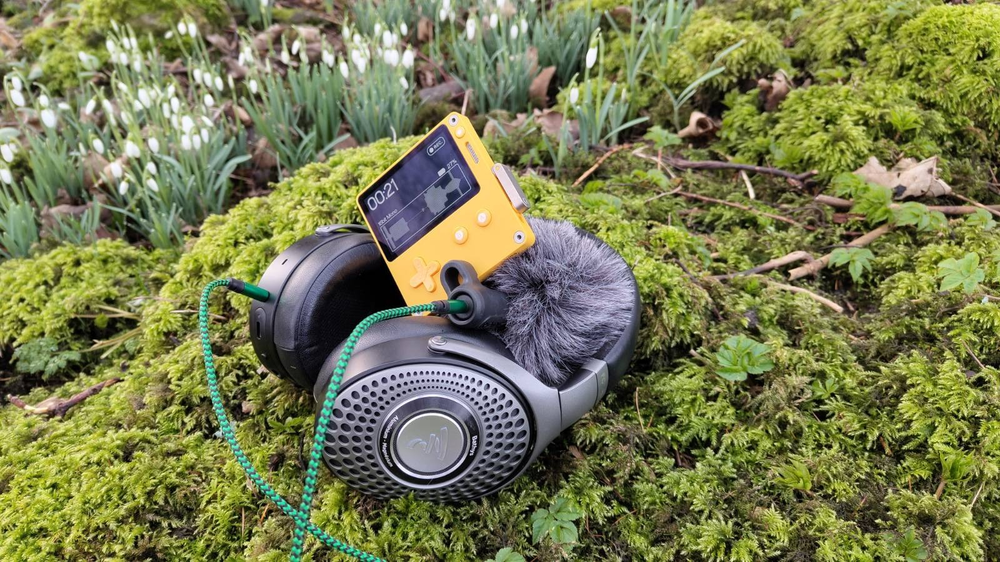

Home / Playdate / Field Recorder

A simple Playdate audio recorder. The Playdate supports recording in 16bit which makes it capable of recording high quality audio, especially when using an external microphone.
Example recordings using the internal microphone:
There's a menu option to change the audio format with 16bit mono being the default. The Playdate has limited memory and doesn't support streaming audio to file so Field Recorder is limited by the size of the buffer the hardware will allow:
| Format | Seconds |
|---|---|
| 16bit Mono | 90 |
| 16bit Stereo | 45 |
| 8bit Mono | 180 |
| 8bit Stereo | 90 |
Note that Field Recorder doesn't support playback of the generated .wav files, to use the recorded audio you need to connect to a computer via USB and put your Playdate into Mass Storage mode (Settings > System > Reboot to Data Disk), it'll then appear as a mounted USB drive with the recorded audio in the Data/orllewin.playdate.field_recorder folder.
Also note that the audio ui is only a pseudo representation of the waveform based on average amplitude. The Playdate API doesn't offer any way to analyse the incoming audio buffer (at least not in the Lua SDK), so a full height bar doesn't mean the audio is clipping.